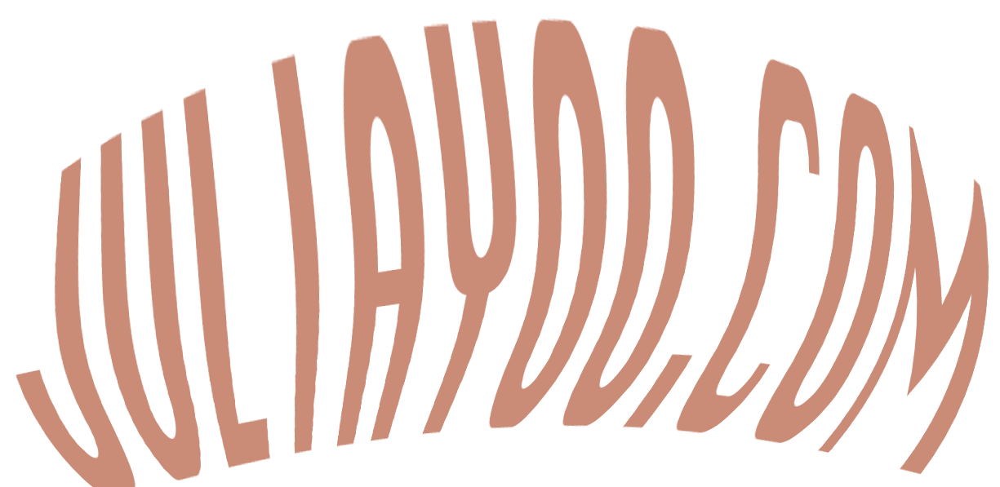

LOVE BOT
Love Bot (tentative) is a neural-network powered robot that learns the user’s facial preferences and using real time camera input, detects faces that the user may like. The user trains the robot on a dataset of images of faces, varying in age, gender and race (scraped from thispersondoesnotexist.com), selecting yes or no. The outputted organized dataset is then used to train Love Bot’s neural network, built upon several other pre-trained models for feature extraction, image recognition, etc. The fine-tuned model, running inside the doll’s shell will then be connected to a small camera in the doll’s eye. Using pre-trained facial recognition models, the network will then evaluate if a detected face matches the user’s preferences. If yes the robot will indicate, likely with an LED light. Bot will be building upon Open CV and potentially Google ML KIT feature extraction coordinates. The robot is a study of biases in the training of AI, dating app algorithms, an experiment in combining the vanity culture of dating apps and real world interaction.TUNER
GERP
WEB ART
